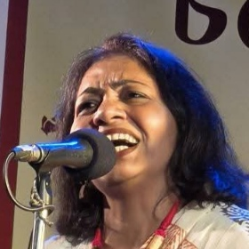
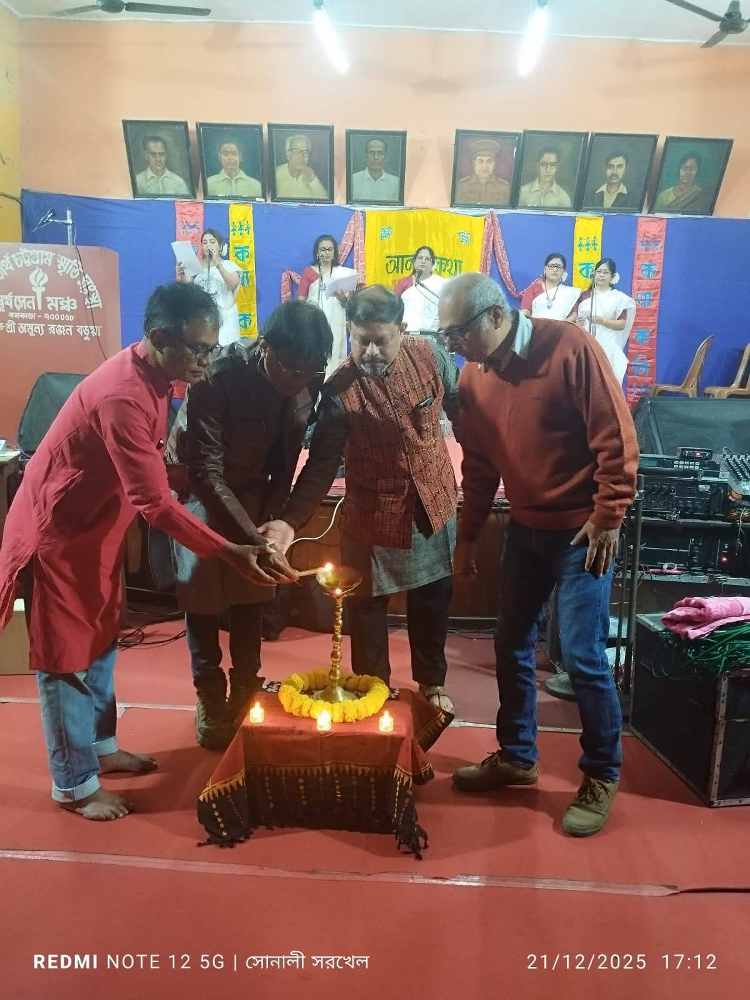
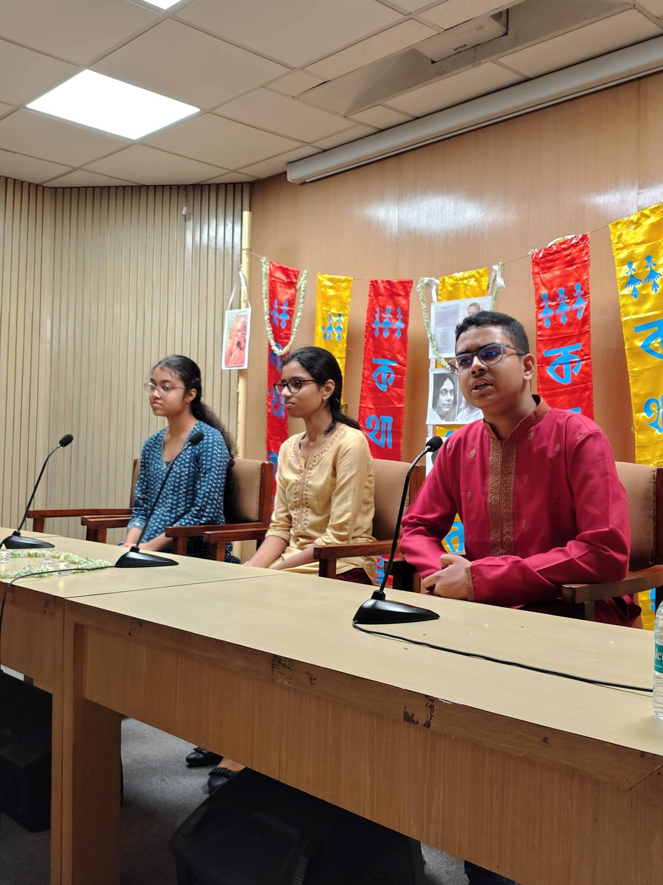
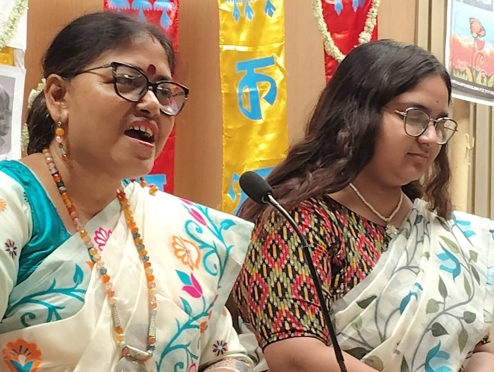
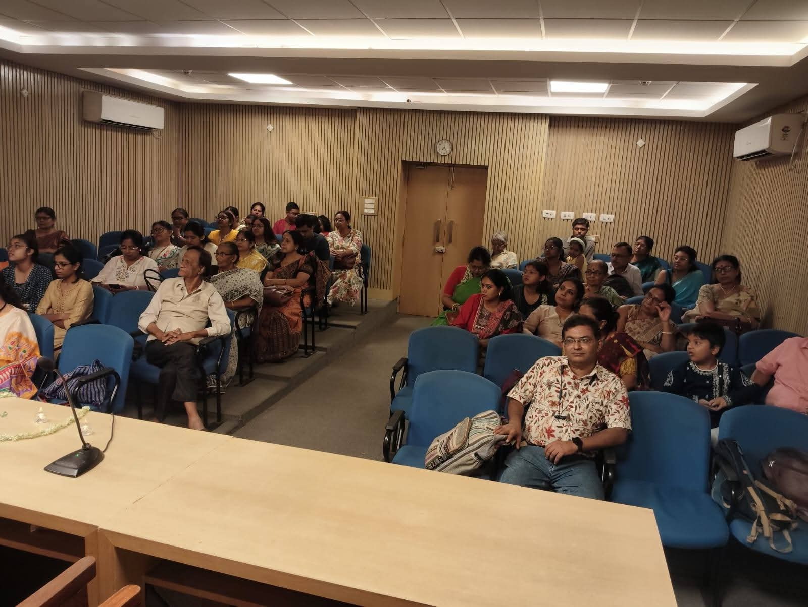
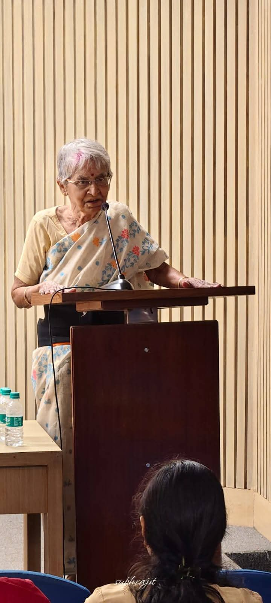
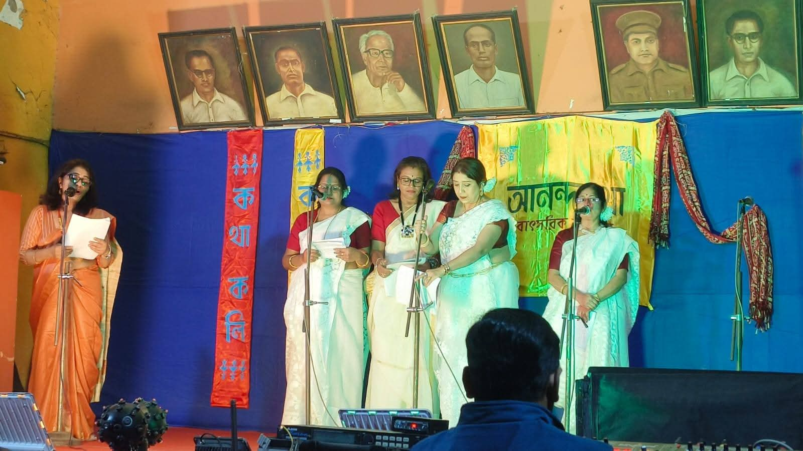
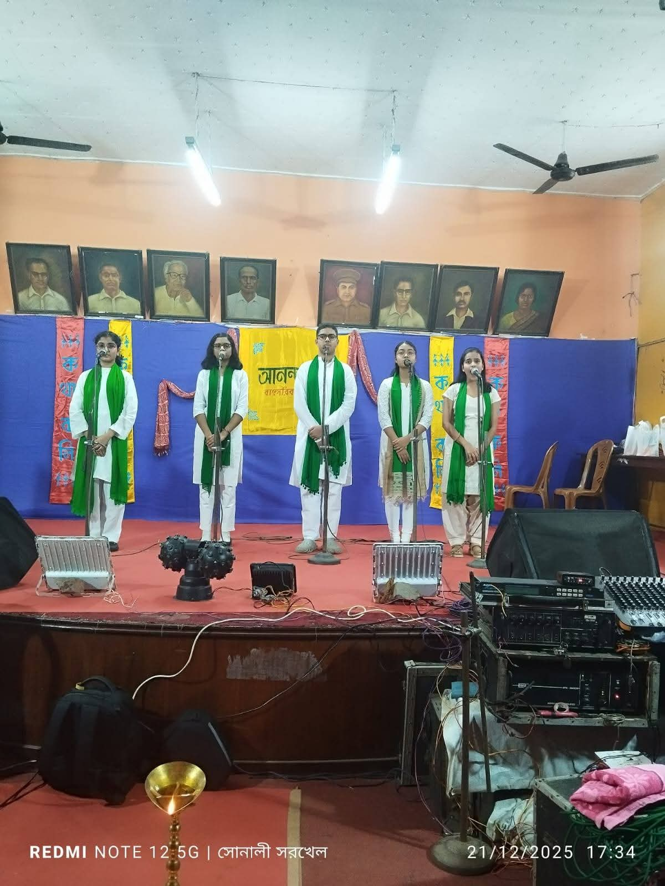
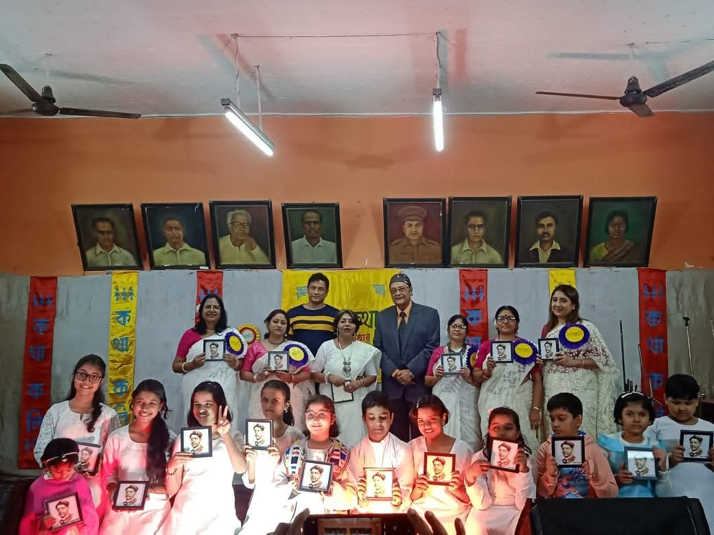
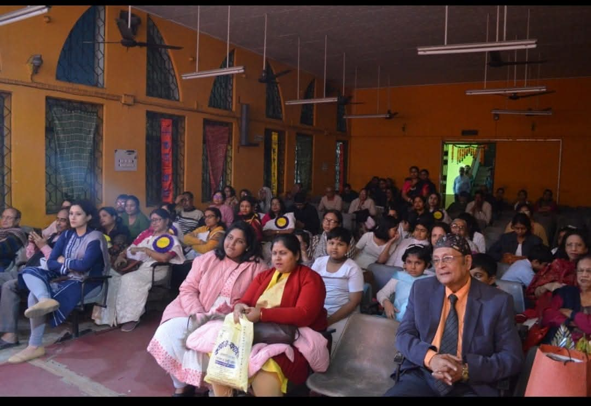

উচ্চারণ
Pronunciation
Clear, accurate and expressive Bengali pronunciation — the foundation on which every recitation stands.
A Bengali Recitation Institution
“কবিতার সঙ্গে বন্ধুত্ব, শব্দের সঙ্গে পথচলা।”
Where poetry is not merely learned, but felt, understood and expressed.
01 Our Philosophy · দর্শন
“এখানে কবিতা শেখা কোনো বোঝা নয়।”
“এখানে শেখা মানে শুধু মুখস্থ করা নয়; শব্দকে অনুভব করা, ছন্দকে বোঝা, কণ্ঠে প্রাণ দেওয়া এবং নিজের প্রকাশভঙ্গিকে আবিষ্কার করা।”
At কথাকলি, recitation is approached as an experience rather than another academic obligation. Students are encouraged to discover poetry naturally, understand its emotions and express it with confidence.
02 About · কথাকলি সম্পর্কে
A living room of Bengali language, voice and verse.
কথাকলি is a Bengali recitation institution — a literary and cultural home where the spoken word is given the same care, discipline and devotion that music receives at a conservatory. It exists for one reason: so that the beauty of Bengali poetry can be carried in the voice, not only on the page.
Recitation — আবৃত্তি — is among the most complete acts of language. It asks the reciter to read deeply, feel honestly, breathe patiently and speak with intention. A student who recites well has learned to listen, to understand rhythm, to inhabit meaning and to hold a room with nothing but their own voice. These are abilities that stay long after a particular poem is forgotten.
Bengali literature carries one of the richest poetic traditions in the world. কথাকলি exists so that learners of every age — children finding their first poem, students sharpening their expression, and adults returning to the verses they once loved — do not merely study that heritage from a distance, but stand inside it: pronouncing its words, feeling its cadence and presenting it to an audience with pride.
কথাকলি did not begin as an institution — it began as a love: for the sound of Bengali, for the poets who shaped it, and for the joy a child feels when a room falls silent to listen. Under Mrs. Jhuma Sarkhel's guidance, that love has grown into a gentle, disciplined home for recitation — a place where tradition is honoured but never allowed to become heavy, and where every voice, hesitant or bold, is welcomed exactly where it stands.
◆ What grows here
03 The Learning Experience
The Art of Recitation
Pronunciation
Clear, accurate and expressive Bengali pronunciation — the foundation on which every recitation stands.
Rhythm
Understanding pace, rhythm and flow — knowing when a line asks to hurry, and when it asks to rest.
Expression
Learning to communicate the emotion inside poetry, so the audience feels what the poet meant.
Voice
Developing modulation, clarity and vocal confidence — an instrument trained gently, over time.
Stage
Becoming comfortable, composed and present in front of an audience — from first line to final bow.
04 Classes · ক্লাস
Learn Your Way
No one is too young or too old to begin — কথাকলি welcomes learners of every age, from a child reciting their first rhyme to an adult returning to poetry after years away.
Offline Classes
In-person sessions at কথাকলি offer the fullest form of learning: the mentor hears each student directly, corrects pronunciation in the moment, demonstrates tone and pause, and guides practice as it happens. Live recitation before a small, encouraging group builds stage instinct from the very first class.
Immediate feedback, shared listening and the warmth of learning together make the offline classroom the heart of the কথাকলি experience.
Online Classes
Students who cannot attend in person can still learn from anywhere. Guided online instruction carries the same care — poems are studied line by line, recitation is heard and refined, and practice continues between sessions with clear direction.
Distance never becomes an excuse to drift: every online student remains part of the same literary journey, with the mentor only a call away.
05 The Mentor · গুরু
Meet the Mentor

Mentor · আবৃত্তি শিক্ষিকা
Every literary institution carries the voice of the person who shapes it. At কথাকলি, that voice belongs to Mrs. Jhuma Sarkhel, who guides students not as a taskmaster but as a fellow traveller in poetry — someone who believes a poem is never truly finished until it has been spoken aloud with understanding.
Her classroom is built on patience and encouragement: every child is heard, every voice is respected, and progress is measured not in marks but in the quiet confidence that grows when a student finally owns a poem.
Under her guidance, a poem is never assigned as homework — it is offered as an invitation. A hesitant line is met with patience, a strong one with delight; and slowly, without the student noticing, the verse becomes theirs.

06 The Annual Programme
Where a year of learning steps into the light.
The annual programme is the moment the classroom dissolves and the stage appears. Every student — from the newest beginner to the most confident reciter — is invited to bring their learning before family and friends. It is not an examination; it is a celebration.




অনুষ্ঠানের ঝলক · Press to open · scroll or swipe to browse

07 A Cultural Dedication
Celebrating Rabindranath & Nazrul
Bengali recitation lives between two great suns. At কথাকলি, dedicated programmes honour the works of both poets — not as syllabus, but as living literature to be spoken, shared and loved.
রবীন্দ্রনাথ ঠাকুর
Rabindranath Tagore — whose songs, poems and prose teach the reciter restraint, melody and quiet depth.
কাজী নজরুল ইসলাম
Kazi Nazrul Islam — the rebel poet, whose rhythm and fire teach the reciter energy, courage and surge.
08 Poetry · কবিতা
Close to poetry — a small, growing shelf of verses we live with.
— রবীন্দ্রনাথ ঠাকুর
মেঘের কোলে রোদ হেসেছে, বাদল গেছে টুটি। আজ আমাদের ছুটি, ও ভাই, আজ আমাদের ছুটি॥ কী করি আজ ভেবে না পাই, পথ হারিয়ে কোন্ বনে যাই, কোন্ মাঠে যে ছুটে বেড়াই, সকল ছেলে জুটি॥ কেয়াপাতায় নৌকো গড়ে’ সাজিয়ে দেব ফুলে, তালদিঘিতে ভাসিয়ে দেবো, চলবে দুলে দুলে। রাখাল ছেলের সঙ্গে ধেনু চরাব আজ বাজিয়ে বেণু, মাখব গায়ে ফুলের রেণু চাঁপার বনে লুটি। আজ আমাদের ছুটি, ও ভাই, আজ আমাদের ছুটি॥
— কাজী নজরুল ইসলাম
দুর্গম গিরি, কান্তার-মরু, দুস্তর পারাবার হে! লঙ্ঘিতে হবে রাত্রি নিশীথে, যাত্রীরা হুঁশিয়ার॥ দুলিতেছে তরী, ফুলিতেছে জল, ভুলিতেছে মাঝি পথ — ছিঁড়িয়াছে পাল, কে ধরিবে হাল, কার আছে হিম্মত! কে আছো জোয়ান, হও আগুয়ান, হাঁকিছে ভবিষ্যৎ, এ তুফান ভারী, দিতে হবে পাড়ি, নিতে হবে তরী পার॥
— জীবনানন্দ দাশ
আবার আসিব ফিরে ধানসিঁড়িটির তীরে — এই বাংলায় হয়তো মানুষ নয় — হয়তো বা শঙ্খচিল শালিকের বেশে, হয়তো ভোরের কাক হয়ে এই কার্তিকের নবান্নের দেশে কুয়াশার বুকে ভেসে একদিন আসিব কাঁঠাল-ছায়ায়। হয়তো বা হাঁস কোনো — কিশোরীর — ঘুঙুর রহিবে লাল পায় সারাদিন কেটে যাবে কলমীর গন্ধভরা জলে ভেসে ভেসে। আবার আসিব আমি বাংলার নদী মাঠ ক্ষেত ভালোবেসে জলঙ্গীর ঢেউয়ে ভেজা বাংলারই সবুজ করুণ ডাঙ্গায়॥
Poems are presented in Bengali only — as they were written.
09 Gallery · ছবির অ্যালবাম
Moments from কথাকলি




10 Essays · পাঠ ও প্রতিফলন
Longer readings on poetry, voice and the life of language.
On what the spoken word gives back.
Recitation is one of the most complete ways a young person can meet a language. It trains the ear first — the student learns to hear a poem before they attempt to speak it. Then it trains the voice: pronunciation becomes precise, breath becomes deliberate, and the sentence acquires shape and music.
And then, quietly, it trains the person. Standing before listeners with a poem in hand develops a composure that no textbook drill can provide. Over time, the student discovers that literature is not a subject to be cleared but a companion to be kept — an appreciation that stays for a lifetime.
“কবিতা মুখস্থ করার জিনিস নয় — কবিতা বুকে নিয়ে বাঁচার জিনিস।”
Why poetry — as an experience, not an assignment.
A poem memorised under pressure evaporates the day after the exam. A poem experienced — read aloud, argued with, laughed over, felt in the pulse — stays. Poetry compresses language until it rings; when a student learns to release that ring with their own voice, something in them sharpens permanently.
At কথাকলি, poems are approached the way one approaches music: by listening, then humming, then performing. The meaning is never an afterthought — it is the very reason for the sound.
The founding belief of কথাকলি is simple: poetry taught as a burden produces resentment; poetry taught as joy produces love. There are no rankings to defend and no fear of being wrong. A mispronounced word is corrected gently, a hesitant line is repeated together, and progress arrives on its own schedule. The aim is that the child leaves each class wanting to return.
Confidence is not announced; it is accumulated. Regular practice before a familiar circle slowly makes performance feel natural rather than frightening. Each small recitation is a rehearsal for a larger one, until the annual programme arrives — and the student who once whispered from the back row stands at the microphone, steady and glowing.
উচ্চারণ · ছন্দ · শব্দভাণ্ডার
Bengali is a language made for the voice. Its vowels are round, its consonants have weight, its rhythms swing naturally between sparkle and solemnity. Recitation study becomes, without the student noticing, a deep education in the mother tongue itself — its pronunciation refined, its vocabulary widened, its expressive possibilities explored from tenderness to thunder.
A child who has recited Bengali poetry well holds the language closer, and for longer, than any worksheet can promise.
A line recited without understanding is noise arranged in rhythm. At কথাকলি every poem begins with its meaning: What is being said? What is being felt? Why this word and not another? Only when the student can answer does the voice take over — and then the same line, spoken with comprehension, sounds unmistakably different. Memorisation may carry the words; only understanding carries the poem.
কথাকলি is not a room where lessons happen and disperse. It is a small, warm society of students, mentor and families — bound by festivals, the annual programme, and the shared pride of watching a shy child bloom into a confident performer. Parents are not spectators at a distance; they are part of the applause that makes the next recitation possible.
11 The Student Journey
From first recitation to confident performance.
আবিষ্কার
Discover
The student meets poems by listening — no obligation attached, only sound and story.
উপলব্ধি
Understand
Meaning comes first: what the poem says, what it feels, why it matters.
অভ্যাস
Practise
Lines are repeated with guidance — pronunciation, pause and pace refined gently.
প্রকাশ
Express
The voice makes the poem its own; emotion flows through trained technique.
পরিবেশন
Perform
Stage, audience, applause — the year's quiet work becomes a visible moment.
12 Voices · অভিজ্ঞতার কথা
Words from our students and their families.
এক বছর আগেও সবার সামনে দাঁড়ালেই আমার গলা শুকিয়ে যেত। আজ মঞ্চে দাঁড়িয়ে আনন্দে কবিতা পড়ি — আমার মধ্যে এই বদলটুকুই কথাকলির সবচেয়ে বড় উপহার।
ছেলেটা এখন বাড়ি ফিরেও কবিতা আওড়ায়, আমাদের শোনায়। পরীক্ষার চাপে নয় — ভালোবেসে। সন্তানের মধ্যে এই ভালোবাসাটুকু জাগিয়ে তোলাই কথাকলির সবচেয়ে বড় কৃতিত্ব।
13 Contact · যোগাযোগ
Begin your journey with poetry.
Admissions, class timings, or simply a question about how recitation is taught — the mentor is happy to speak with you directly.